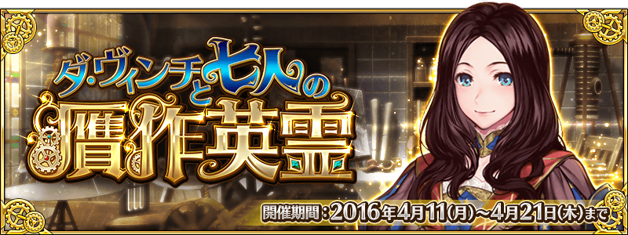
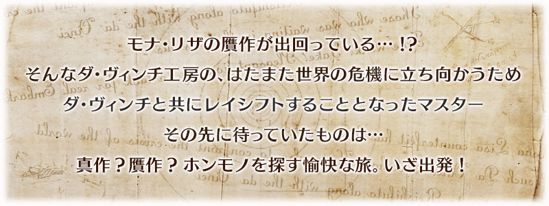
◆活動舉辦期間◆
2016年4月11日(一)17:00～4月21日(四)12:59
◆活動概要◆
期間限定活動「達文西和七位贗品英靈」！
為了查明世上充斥贗品之謎，達文西挺身而出。
與自由奔放的達文西的旅途上究竟會出現什麼！？
2種類的景品抽選在這次的活動同時登場！
參加推進故事所出現的周回關卡和加成關卡，收集景品抽選所需的道具吧！
◆參加條件◆
僅有通過「第一特異點 邪龍百年戰爭 奧爾良」的Master方能參加
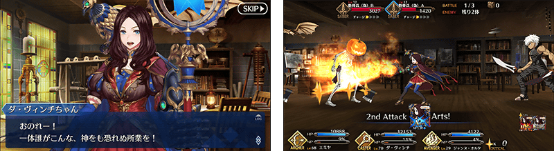
在活動關卡收集集聚「手稿（真）」「手稿（偽）」，在真品交換所及贗品交換所交換景品吧！
景品的交換是以抽選方式進行。
在交換所，每個陣容會放入1個大獎道具。
抽到大獎道具，實行「景品重置」的話，會補充新的大獎道具。
有放入大獎道具的陣容，每交換所各有6次！
取得中獎道具後點擊「景品重置」鍵、補充大獎道具吧！
※第7次後不會補充大獎道具。必須入手陣容內的全道具才能進行「景品重置」。
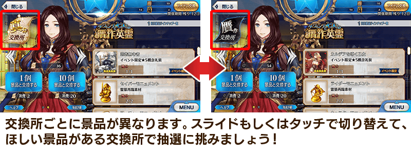
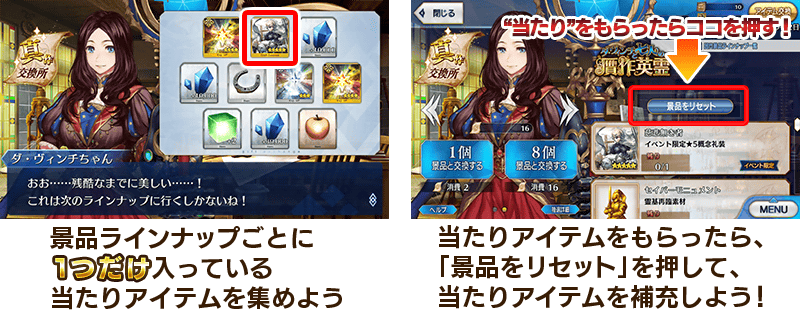
◆「真品交換所」景品陣容◆
| 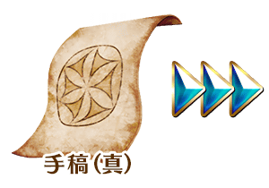 |
【大獎道具】 【技能強化素材、靈基再臨素材】 【各種卡片】 【其他道具】 |
◆「贗品交換所」景品陣容◆
| 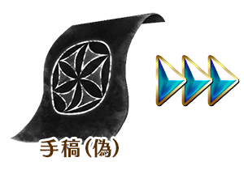 |
【大獎道具】 【技能強化素材、靈基再臨素材】 【各種卡片】 【其他道具】 |

◆超值攻略方法・其1◆
以每日交替開放能各自大量獲得「手稿(真)」「手稿(偽)」的加成關卡。
關於同時開放2個加成關卡的1日，(真)(偽)之中只能通過一個。
整好裝備，挑戰想要入手的手稿的關卡吧！
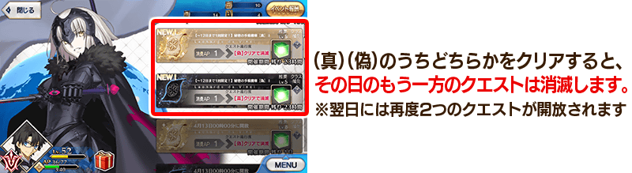
◆超值攻略方法・其2◆
將特定職階的Servant編入隊伍的話，「手稿(真)」「手稿(偽)」各自的掉落獲得數增加！

◆超值攻略方法・其3◆
裝備在真品交換所及贗品交換所入手的活動限定概念禮裝，掉落「手稿(真)」「手稿(偽)」的敵人出現度會各自增加。
讓出現的敵人偏向某方，收集特定手稿的效率就會更好。
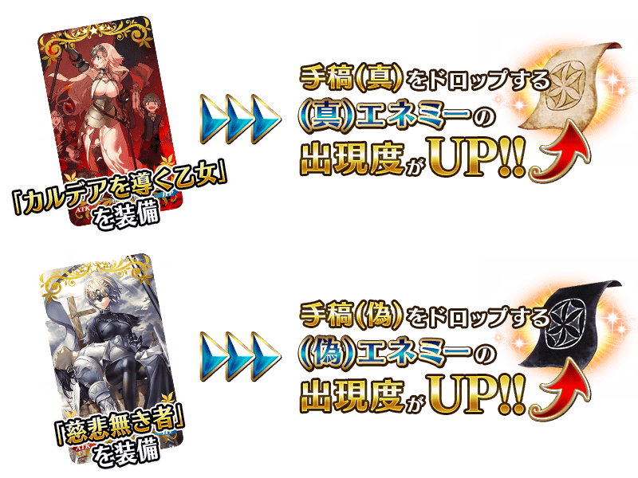
◆超值攻略方法・其4◆
裝備在聖晶石召追加喚的概念禮裝，活動專用道具「蒙娜麗莎(偽)」「自畫像(偽)」「人體圖(偽)」的掉落獲得數增加。
還有，裝備收集活動專用道具交換的活動限定概念禮裝，「手稿(真)」與「手稿(偽)」雙方的掉落獲得數增加。
※請注意在各關卡的道具掉落率並非100%。
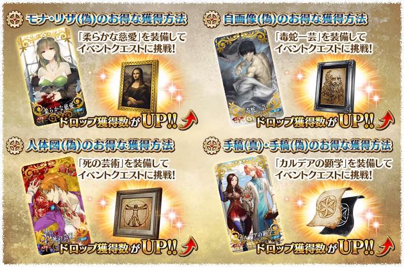
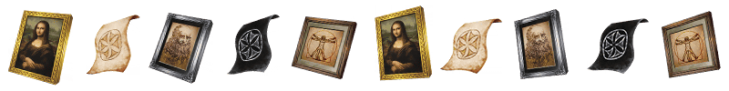
◆活動限定概念禮裝◆
| 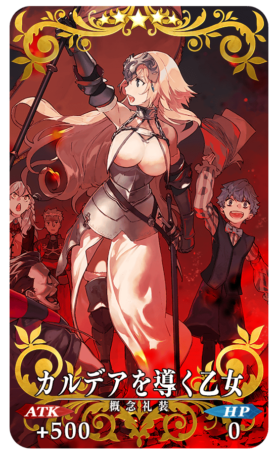 |
★★★★★SSR |
| 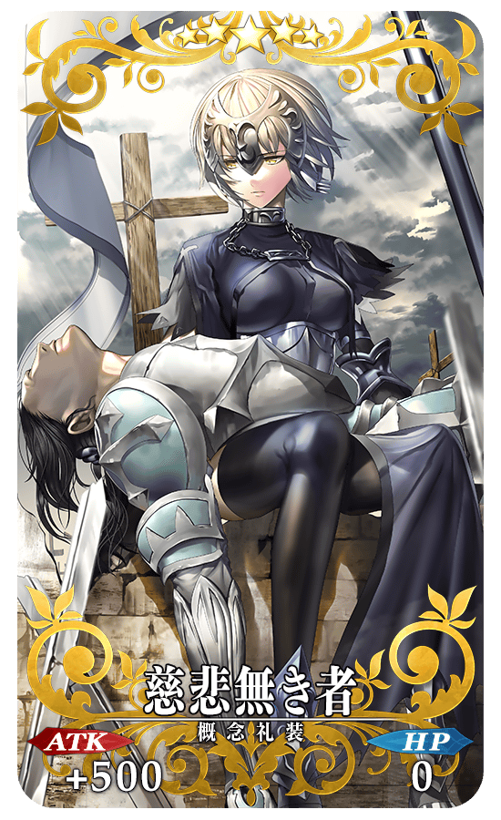 |
★★★★★SSR |
| 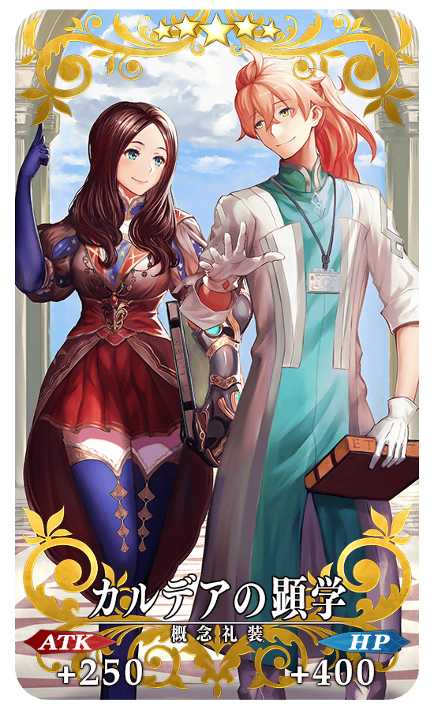 |
★★★★★SSR |
◆交換方法◆
交換期間：2016年4月11日(一)17:00～4月27日(三)12:5913:59
※交換期間結束後「蒙娜麗莎(偽)」「自畫像(偽)」「人體圖(偽)」會消失。
從達文西工房内的「活動道具交換」，用收集來的活動專用道具來交換以下的道具。。
◆能用蒙娜麗莎(偽)交換的道具◆
| 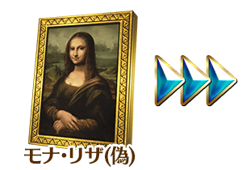 |
【活動限定概念禮裝】 【技能強化素材、靈基再臨素材】 【其他道具】 |
◆能用自畫像(偽)交換的道具◆
| 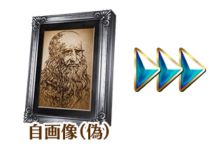 |
【活動限定概念禮裝】 【技能強化素材、靈基再臨素材】 【其他道具】 |
◆能用人體圖(偽)交換的道具◆
| 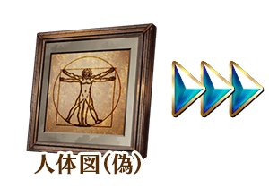 |
【活動限定概念禮裝】 【技能強化素材、靈基再臨素材】 【各種卡片】 【其他道具】 |
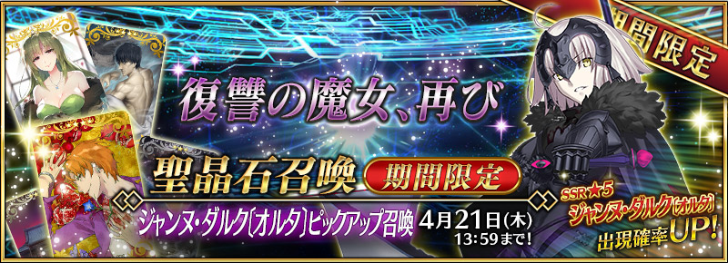
◆「貞德〔Alter〕Pick Up召喚」期間◆
期間：2016年4月11日(一)17:00～4月21日(四)12:59
以期間限定舉辦「貞德〔Alter〕Pick Up召喚」！
Servant「★5（SSR）貞德〔Alter〕」作為Avenger以期間限定登場！
詳情請在聖晶石召喚畫面左下的召喚詳細確認。
※貞德〔Alter〕在Pick Up召喚期間結束後，不會追加到故事召喚。
新概念禮裝「★4（SR）毒蛇一芸」、「★4（SR）死の芸術」、 「★4（SR）柔らかな慈愛」也是初登場。
在Pick Up期間中，期間限定Servant、新概念禮裝的出現機率提升！
10次召喚★4(SR)以上1枚確定和★3(R)以上的Servant1位確定！
※★4(SR)以上確定包含Servant和概念禮裝。
※所謂「出現機率UP」意指比同稀有度的Servant及概念禮裝出現機率更高的設定。
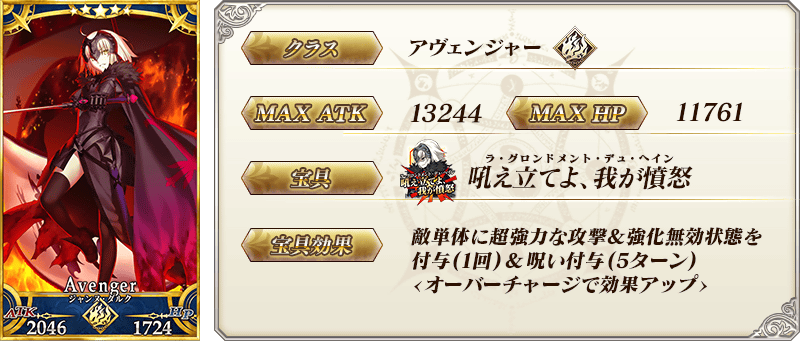
| 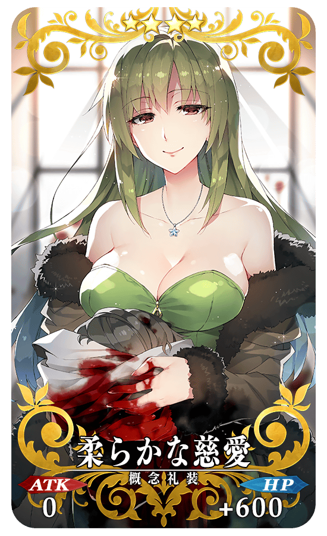 |
★★★★SR |
| 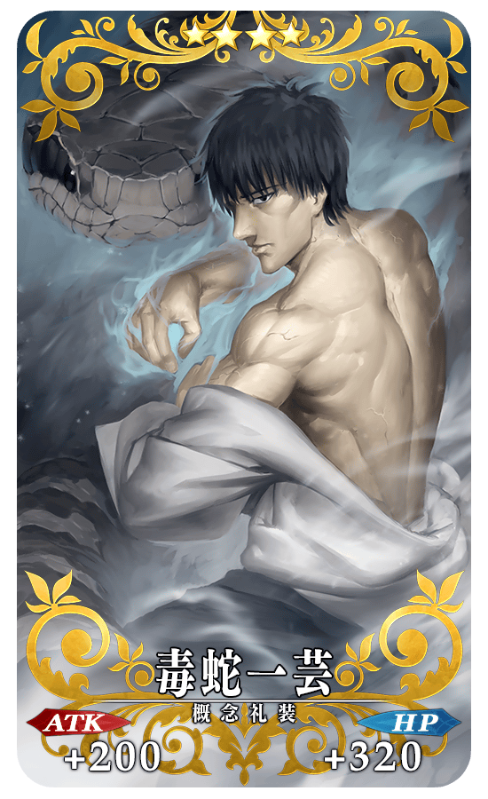 |
★★★★SR |
| 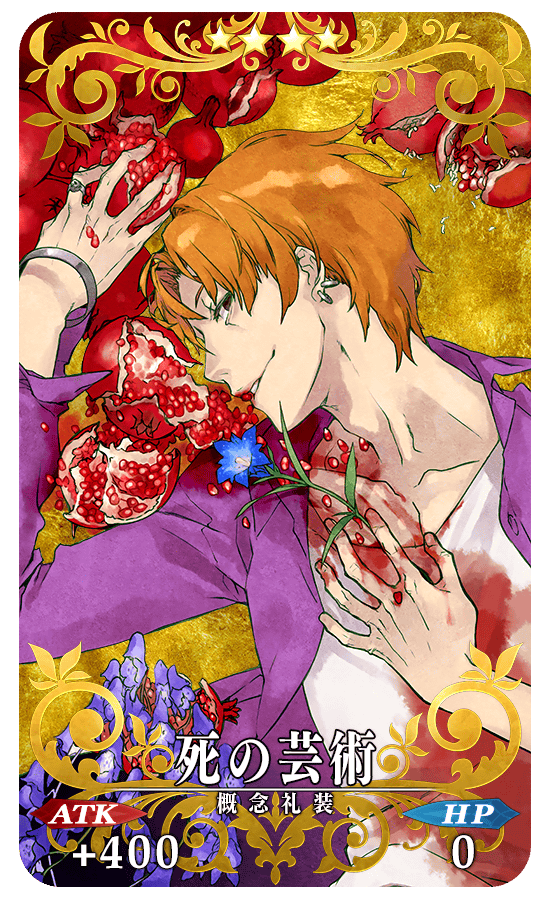 |
★★★★SR |
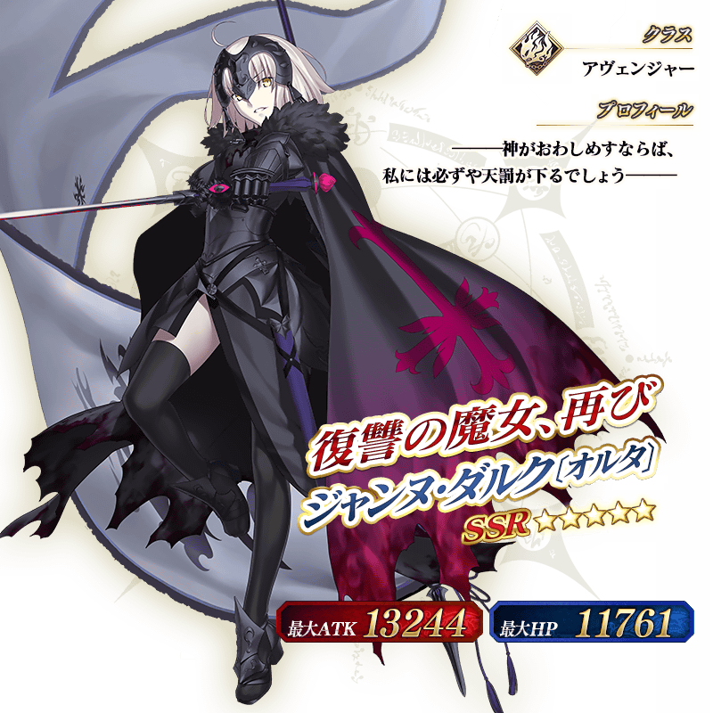